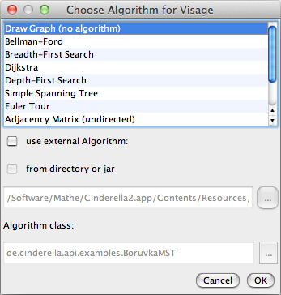
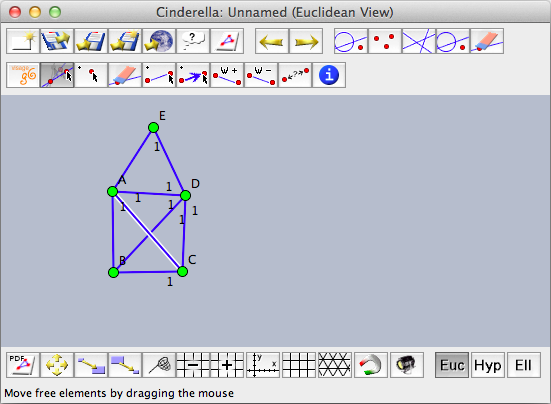
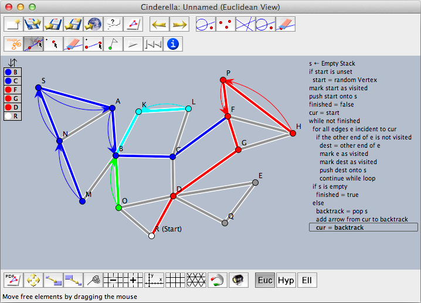

Visage: Visualization of Graph Algorithms
The Visage extension of Cinderella has it origins in a project started in 2005 in the DFG research center Matheon in Berlin.
We will give only a brief overview over the basic elements of Visage here. You can find more information about Visage (mostly in German language) on its webpage at http://cinderella.de/visage
Starting Visage
You can access Visage from the Scripting menu. Choosing the Visage menu item will open a window for choosing the basic graph algorithm underlying your explorations.
 |
| Choosing the underlying algorithm for Visage |
For now, choose the "Draw Graph" algorithm. The Cinderella toolbar will change to a Visage-specific toolbar that contains tools for drawing vertices and edges.
 |
| A famous graph |
You can draw undirected or directed and unweighted or weighted graphs. Usually, the chosen graph algorithms governs the available types. You can always choose a new algorithm (and its corresponding toolbar) using the button, and, if applicable, the existing graph will be reused.
Running Algorithms
Visage comes with several built-in algorithms that can be applied to graphs. By default the algorithms run in step-by-step mode, as Visage is not meant for high-performance calculations but for visualization in educational settings. Pressing the play button will execute one step each time. The rewind button reinitializes the algorithm and you can start it again.
 |
| Visualizing Depth First Search |
Interaction With CindyScript
You can write graph algorithms also in CindyScript. On the Visage website you find a small library that makes it easy to access vertices and edges of a graph. This library relies on user attributes of geometric elements. These user attributes are accessible via two CindyScript commands:
Set a user attribute: attribute(<geo>,<string1>,<string2>)
Description: Sets the user attribute of <geo> identified by <string1> to the value <string2>.
Read a user attribute: attribute(<geo>,<string>)
Description: Returns the user attribute identified by <string> of the geometric element <geo> .
The Visage extension sets the attribute
"edge" of undirected edges to "u" and of directed edges to "d". The attribute "vertex" of vertices is set to "v". Thus, you can identify the vertices and edges of a graph by checking these attributes:
alledges():=select(allsegments(),
attribute(#,"edge")=="u" % attribute(#,"edge")=="v");
allvertices():=select(allpoints(),attribute(#,"vertex")=="v");
If you mark a vertex as a start or end vertex for a graph algorithm it will have the attribute
"specialvertex" with a value of either "start" or "finish". Finally, weighted edges store their weight in the user attribute "weight". For flow algorithms the capacity and flow are stored in the user attributes "capacity" and "flow", as expected.Java Extensions
Actually, it is also possible to write algorithms in Java that interact with the Visage extension. However, the API for such interaction is only available online at http://cinderella.de/visage
visage@cinderella.de.
Page last modified on Monday 05 of September, 2011 [09:15:33 UTC].
The original document is available at
http://doc.cinderella.de/tiki-index.php?page=Visage